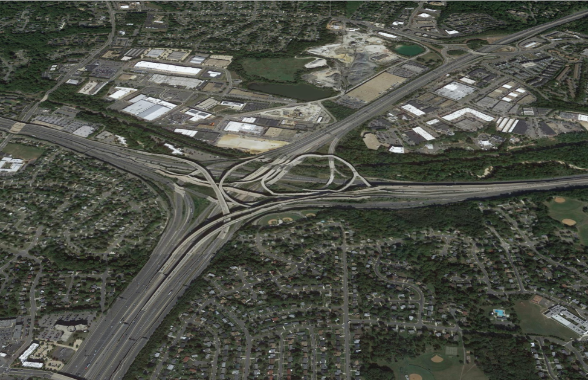
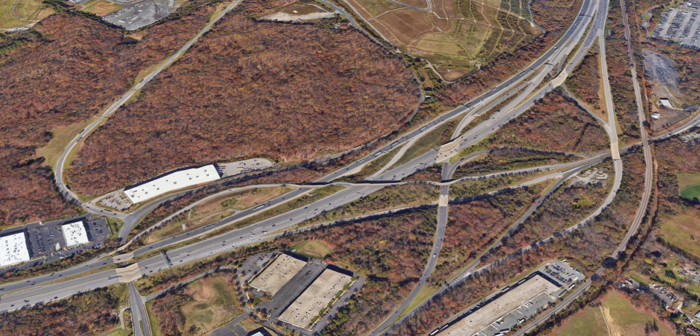
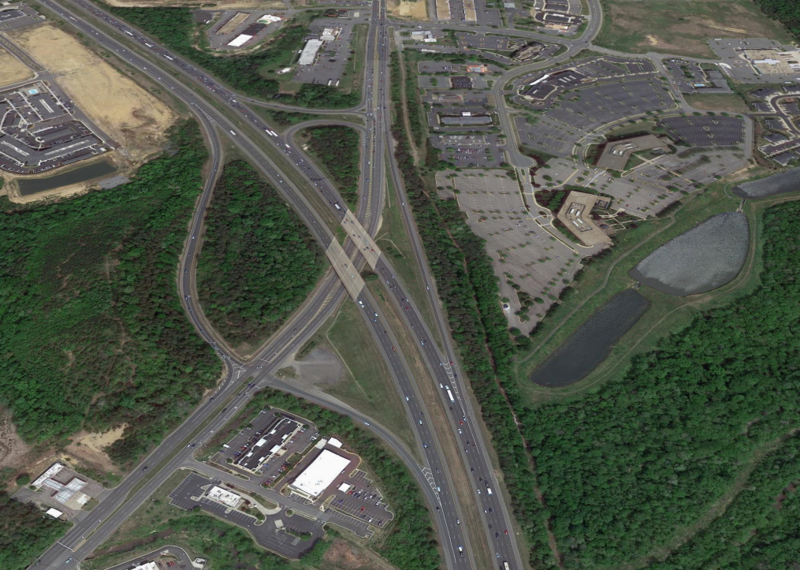
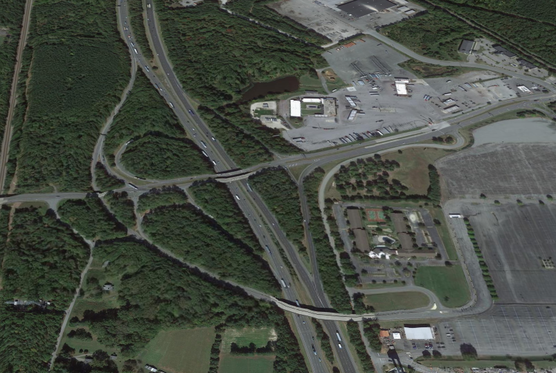
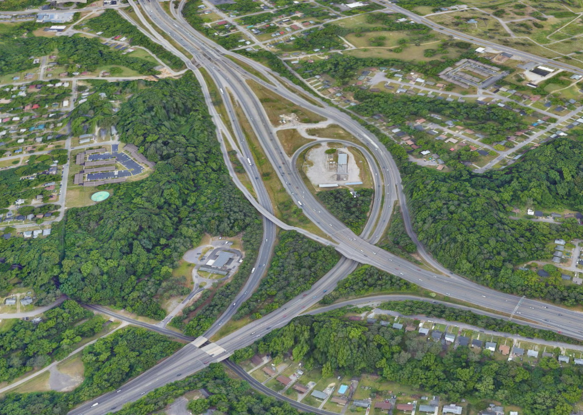

There are some very cool interchanges on I-95 in Virginia. This page will describe them. not in detail.
This interchange is known as "The Mixing Bowl" by some locals because of how big it is and it's big part of DC Communters. this interchange handles I-495, I-95, and I-395 and the express lanes of I-95/I-395.
This interchange handles I-95/US-1 in Wodbridge, VA. This interchanmge makes the list because of how unique it is. Have you sene an interchange like this? No, you haven't. It even has express exits.
This interchange handles I-95/US-1 in Fredericksburg. The reason this makes the list because it looks simple and is a core interchange of I-95 in VA. It's also in the middle of DC and Richmond (I-495 and I-295). It also looks like Montgomery Village Ave/I-270 interchaneg in Gaithersburg, MD.
This interchange handles I-95/VA-30/South exit to Kings Dominion. The reason this interchange made this list is because Kings dominion is here, and it's differnt then most interchanges in this segmant of 95.
This interchange handles I-95/I-85. The reason this interchange made the list is because how important this interchange is. Lots of trucks come from here to go north toward DC and the Northeast.
